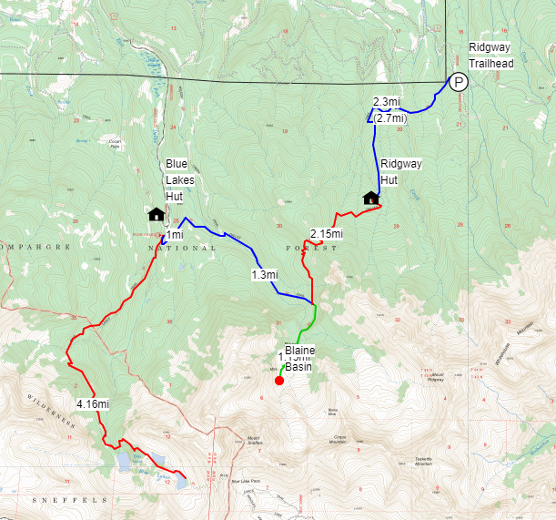

Overview
Instead of taking a traditional honeymoon (thanks Covid-19 😜), we’d like to celebrate our marriage
by going on a hut-to-hut backpacking trip with some of our closest friends. Backpacking and staying
at backcountry huts is something we really enjoy and we’d like to share that joy with you all. We
also feel this is a nice way to spend more time with people given everyone is traveling relatively
far for the wedding and we want to make that travel well worth it.
Trip Details
We will be spending 4 days in total split between two different backcountry huts run by
San Juan Huts. The trip will cover
approximately 23 miles over the course of 5 days through the
Mount Sneffels Wilderness,
almost entirely along the Dallas Trail.

(Taken from the summit of Mt. Sneffels)
Huts
Each hut features 8 bunked beds, a wood stove, a two burner propane stove, sink, and cooking/eating utensils. Specific amenities
for the huts can be found here. Each hut can accommodate 8 people and we
will be booking out the entire hut such that we are the only party staying at the hut. We’ve stayed at multiple different huts
before and have really enjoyed all of them; they are super nice and usually have great views! However, keep in mind that these are
backcountry huts so while they are really nice they don’t have running water, only have a pit toilet, and we will be making all of
our own food.
Each hut costs $30/person/night so it will cost $120/person for the entire trip. We will be booking the huts in advance so payments will
be made to Ben closer to the wedding date. If you’re interested in the trip, but the cost is an issue please let us know as we’d hate for
someone to miss out because of money.
We will be carrying all of our own food and making all of our food at the huts. We will be putting together a food list ahead of time and
then work together as a group to divy up the food responsibilities. Part of the fun on these trips is seeing what different people bring and
making food together in a small space with limited tools.


Note:The pictures we have are from trips in November, so there shouldn’t be snow (or at least not nearly this much).
Itinerary
The full trip route can be found here. Please let us know if you have any questions.

- Saturday:
- Drive to Ridgeway TH, FR 852
- 1.5 hour drive
- Part of this will be on a 4WD road so we will likely be carpooling using Ben’s car
- Hike: TH to Ridgeway Hut
- 2.7mi, backpacking
- Night: Ridgeway Hut
- Sunday:
- Hike: Ridgeway Hut to Blue Lakes Hut
- 4.45mi (backpacking)
- Optional add-on hike to Blaine Basin makes the total mileage 6.75mi (all backpacking)
- Night: Blue Lakes Hut
- Monday:
- Hike: Blue Lakes, FR 852
- 8.3mi RT (day hike)
- There’s a chance snow will block access to the lakes so we may need to turn around earlier
- Night: Blue Lakes Hut
- Tuesday:
- Hike: Blue Lakes Hut to Ridgeway Hut
- 4.45mi (backpacking)
- Optional add-on hike to Blaine Basin makes the total mileage 6.75mi (all backpacking)
- Night: Ridgeway Hut
- Wednesday:
- Hike: Ridgeway Hut to Ridgeway TH
- 2.7mi (backpacking)
- Drive back to Denver (or wherever else)
- 6.5 hour drive to Denver
What To Bring
While this will be backpacking, the camping portion will be more like glamping. So you should plan on bringing the following:
- Backpack
- Sleeping Bag
- Water Bottles
- Water Filter (if you have one, Ben has one so we’ll have at least 1)
- Hiking Shoes/Boots
- Warm Hat
- Warm Gloves
- Hiking Socks (multiple pairs)
- Rain Jacket
- Headlamp
- Pack Cover (if you have one, garbage bags can also substitute)
- Hat (for shade)
- Sunglasses
- Sunscreen
- Bug Spray
- Food (exact details TBD)
- Microspikes (if you have them)
- Warm Jacket (i.e. puffy)
- Change of Clothes (probably 2)